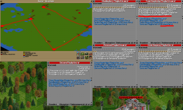

Passenger Destinations – we need them!!
Hello community,
today, I read this forumpost about passengers with specific destinations. It seems like a lot of improvements were made and prssi supplied a pretty stable code by now. Therefore, I decided to compile myself a Pax-Destination-patched OpenTTD.
First step: checkout a working copy of the OpenTTD trunk:
svn co -r 9562 svn://svn.openttd.org/trunk OpenTTD-PaxDestinations
Second step: copy .diff into the directory and apply it on the source:
patch -p0 -i destination_r9562_182.diff
Third step: configure and make:
./configure && make
And you’re done. Its really that easy!
But let’s start playing. I used our #openttdcoop-grf-pack in order to have a nice planeset. I will stick to aircraft transportation only since the main goal here is to show you the advantages of the passenger destinations patch. First of all, we need some destinations for our air fleet.

We will continue adding airports to our “network”. Each time you add an airport to the current network by creating a plane and set at least one stop to an airport already serviced, all other airports “connected” have a new destination. Therefore, passengers on all other airports now have a new destination to reach and demand will occure.
Lets illustrate this with a screenshot:

Pruwood passengers now may go to Chadingbury Airport with one stop in between (You may set the amount of maximum hops in your patch options). This is due to the fact there is no route directly between these two cities but between Chadingbury and Truntfingbridge as well as between Truntfingbridge and Pruwood.
Let us continue and add further stops: 

Another are linked to our network now. Each link is a direct connection between two cities, as the red lines indicate. Chadingbury to the northeast and Setown to the very northwest are the endpoints in our network. Therefore, passengers traveling between the two cities have to accept 3 transfers (stops in between). As you may imagine, each aircraft servicing the center of our network has now even more passenger to carry – due to its transfer-duties! As I marked in the picture, there are quite a lot of passengers at Truntfingbridge Airport with destination Setown Airport. We are now encouraged to create a new, direct connection between these two cities. Not only to roleplay-improve the quality of our server but also to free capacity on the other planes now transfering these passengers via Pruwood and Grintfingway.
Gameplay is greatly improved by passenger destinations! Earlier, we had to roleplay in order to argue why we offer a lot of destinations for passengers in our network. We could well have optimized the destinations under a purely economic point of view. Nevertheless, its obvious the algorithm “creating” passenger and their desired destination is not very realistic. But, and this is my main point, it greatly improves gameplay by determining where you have to setup routes. Before, one built a train where empty tracks cried out for traffic. Now, you are encouraged to save the number of transfers which gives you more capacity on your trains. Furthermore every addition to your network earns you more passenger but challenges your skills on rethinking connection and adding new shortcuts.
In the end: great feature! Great new aspects in gameplay!
Categories: Development, OpenTTD
zet April 5, 2007 18:46
How true. I loved simutrans for this single feature so much. Its all about connecting networks. Setting up all these semaphores in Openttd is nice – but how useless for passengers, since any transport that arrives at a station will carry all passengers away. And delivering passengers there by using the given commands is not really fun and leads to overfilled stations.
This feature would finaly make it worthy to build central trainstations in a city, well connected with the surounding bus stations all across the city. The basic passenger generation rate can be very small (=realistic) for the whole area (compared to the current insane passengerproductionrate that makes it look like that passengers breed in stations like rabbits… (at least I was never able to carry all passengers away from the train stations of huge cities)), but since passengers from other city will travel into other cities as well, the whole system benefits more and more from a largely connected network.
Without that feature, its just pays out to connect two large cities that are as far as possible away to generate much income. But this is really boring…
Sickie April 5, 2007 21:47
Hello, I’ve been wanting this function since I played the original TTD, so I followed your tutorial about compiling it and it does not work for me.
I am using Mint Linux (Ubuntu based). While compiling it gave me the following errors: /home/sickie/TMP/OpenTTD/OpenTTD-PaxDestinations/src/aircraft_gui.cpp:226: warning: ‘void ShowAircraftDetailsWindow(const Vehicle*)’ defined but not used
/home/sickie/TMP/OpenTTD/OpenTTD-PaxDestinations/src/roadveh_gui.cpp:169: warning: ‘void ShowRoadVehDetailsWindow(const Vehicle*)’ defined but not used
/home/sickie/TMP/OpenTTD/OpenTTD-PaxDestinations/src/ship_gui.cpp:166: warning: ‘void ShowShipDetailsWindow(const Vehicle*)’ defined but not used
/home/sickie/TMP/OpenTTD/OpenTTD-PaxDestinations/src/train_gui.cpp:603: warning: ‘void ShowTrainDetailsWindow(const Vehicle*)’ defined but not used
Other than that it seemed fine. And when I run it it quits immediately, although it creates the following files: hs.dat and openttd.cfg, and there is no output in the console.
hylje of ottdcoop April 11, 2007 16:38
Sickie:
The destination patch is incomplete, and has those placeholders in place. Might get used later on.
openttd.cfg is automagically created when openttd runs for the first time — it implements the configuration of the game.